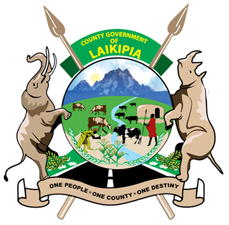
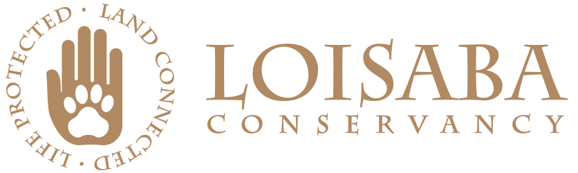
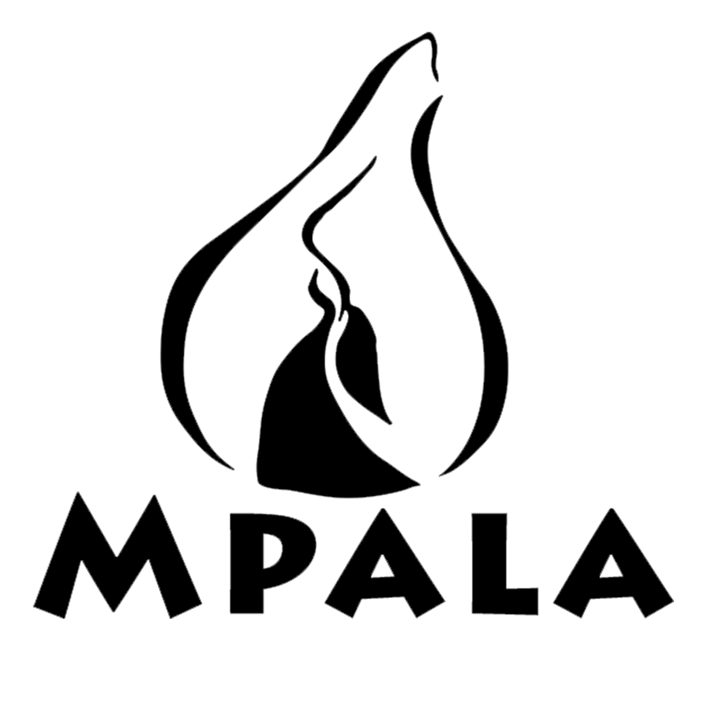
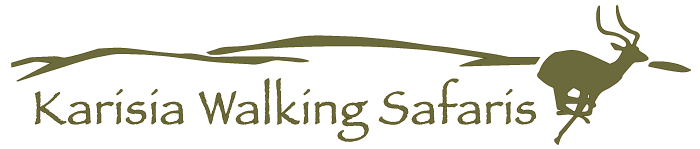
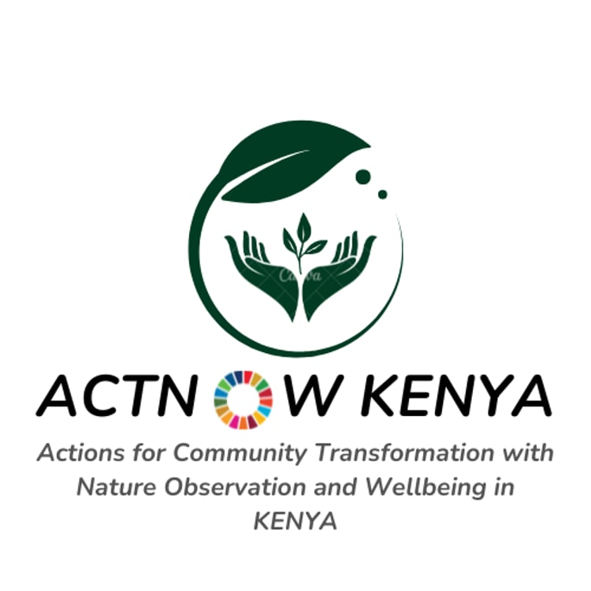
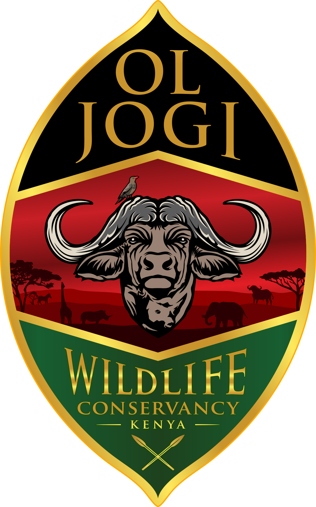
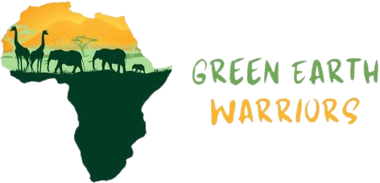

21KM Half Marathon
A signature endurance race designed to showcase talent on Northern Kenya trails.
Run the Wild. Empower the Future.
Laikipia County, Kenya
Across the vast landscapes of Northern Kenya, dusty trails cross ancient community lands, wildlife moves through open plains, and resilience is woven into everyday life. From this powerful setting, a race with a deeper purpose was born.
The Northern Kenya Half Marathon is more than a finish line. It is a story of hope, identity, transformation, and untapped greatness rising from one of Africa's most extraordinary regions.
Founded by passionate young visionaries under the leadership of Ruso Jacob through Northern Empowerment Races CBO, the marathon exists to unlock athletic talent, empower communities, inspire youth and women, and build a lasting running culture across Northern Kenya.
For generations, the region has produced strong, naturally gifted runners. Yet many promising young athletes have lacked exposure, training pathways, equipment, mentorship, and opportunities that could transform their futures. This marathon was established to change that story.
Race categories are organized for runners, families, schools, and community groups as part of the annual Northern Kenya Half Marathon.
A signature endurance race designed to showcase talent on Northern Kenya trails.
A spirited distance for local groups, clubs, and emerging athletes.
An accessible run that invites everyone to share the energy of race day.
A safe, joyful category that encourages early confidence through sport.
A unique route through Northern Kenya's wilderness, community heritage, and scenic landscapes. The course follows community trails across Musul Community Land.

The marathon creates a shared platform for athletic growth, dignity, unity, opportunity, and long-term community visibility.
Develop and nurture athletic talent in Northern Kenya.
Connect runners to training opportunities and mentorship.
Build a lasting running culture across underserved regions.
Empower youth and women through sport and opportunity.
Promote health, wellness, unity, and environmental awareness.
The marathon supports conservation awareness, tourism promotion, community empowerment, and international visibility for remote communities that are often overlooked.
A race weekend shaped by land, culture, conservation, and the spirit of communities running together.
Experience dusty trails, open plains, acacia scenery, and the raw beauty of Northern Kenya.
Connect with indigenous heritage, community pride, music, tradition, and local hospitality.
Promote coexistence between people, wildlife, and land through environmental awareness.
Help young athletes, women, and communities discover opportunity through sport.


A growing collection of moments from the Northern Kenya Half Marathon journey: athletes, communities, partners, culture, conservation, and the landscapes that make this race unforgettable.


The Northern Kenya Half Marathon welcomes partners, sponsors, conservation organizations, community leaders, schools, youth groups, women groups, volunteers, media partners, and well-wishers who believe in using sport as a force for transformation.
Help fund race logistics, athlete support, community activation, and visibility.
Support race day operations, hospitality, athlete care, and community engagement.
Get InvolvedContribute to training access, mentorship, running gear, and opportunity pathways.
Get InvolvedUse race week to amplify awareness for land, wildlife, and sustainable coexistence.
Get InvolvedTell the story of Northern Kenya through travel, culture, sport, and impact.
Get Involved







Musul Community Land Resource Center
Call us for race, volunteer, and partnership inquiries.
0759182251Send us an email and we will respond as soon as possible.
notherhalfmarathon@gmail.com